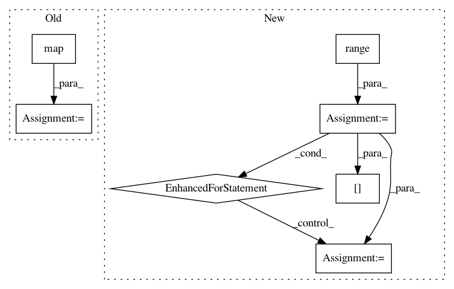

b71152eea0470ac2629c33e0fc66a54fe494949f,baselines/common/vec_env/dummy_vec_env.py,DummyVecEnv,step_wait,#DummyVecEnv#,15
Before Change
def step_wait(self):
results = [env.step(a) for (a,env) in zip(self.actions, self.envs)]
obs, rews, dones, infos = map(np.array, zip(*results))
self.ts += 1
for (i, done) in enumerate(dones):
if done:
obs[i] = self.envs[i].reset()
After Change
self.actions = actions
def step_wait(self):
for i in range(self.num_envs):
obs_tuple, self.buf_rews[i], self.buf_dones[i], self.buf_infos[i] = self.envs[i].step(self.actions[i])
if isinstance(obs_tuple, (tuple, list)):
for t,x in enumerate(obs_tuple):
self.buf_obs[t][i] = x
else:
self.buf_obs[0][i] = obs_tuple
return self.buf_obs, self.buf_rews, self.buf_dones, self.buf_infos
def reset(self):
for i in range(self.num_envs):
In pattern: SUPERPATTERN
Frequency: 3
Non-data size: 7
Instances
Project Name: openai/baselines
Commit Name: b71152eea0470ac2629c33e0fc66a54fe494949f
Time: 2018-02-26
Author: matthiasplappert@me.com
File Name: baselines/common/vec_env/dummy_vec_env.py
Class Name: DummyVecEnv
Method Name: step_wait
Project Name: has2k1/plotnine
Commit Name: d695f661f194ba222386ac4848ac259814de3e49
Time: 2014-04-29
Author: has2k1@gmail.com
File Name: ggplot/geoms/geom_abline.py
Class Name: geom_abline
Method Name: _plot_unit
Project Name: biocore/scikit-bio
Commit Name: dc682236d6f167f733d65057c4faa07a20e32d04
Time: 2014-01-02
Author: jai.rideout@gmail.com
File Name: bipy/core/distance.py
Class Name: DistanceMatrix
Method Name: from_file